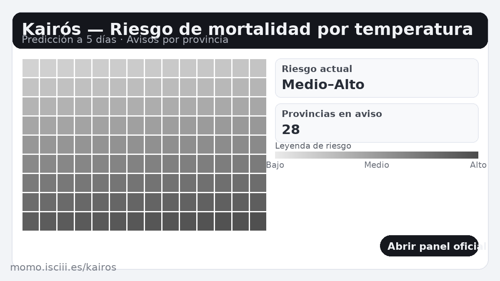
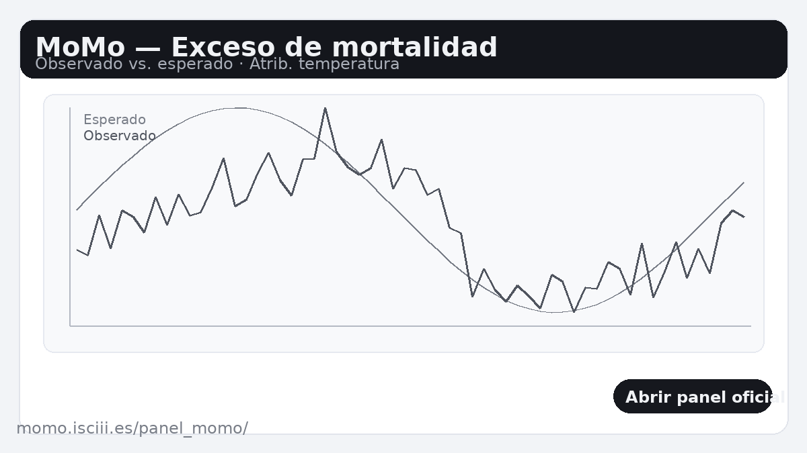

Olas de calor y mortalidad
El incremento en frecuencia, duración e intensidad de las olas de calor aumenta ingresos hospitalarios y muertes. Los planes de prevención (alertas, sombra, hidratación, refugios climáticos) reducen el riesgo.
Hace daño · Propuesta para revisión
El calor y otros impactos climáticos amenazan la salud. Para medirlos hay que distinguir vigilancia de mortalidad, estimaciones asociadas a temperatura y atribución al cambio climático.
La síntesis de Lancet Countdown 2026 describe impactos sanitarios crecientes y avances insuficientes. Es una evaluación global; no demuestra una cifra para España ni constituye una declaración formal de emergencia de la OMS.
MoMo distingue notificaciones, mortalidad corregida por retrasos, exceso respecto a una base y mortalidad atribuible a temperatura. Emplea un GAM de Poisson con tendencia, estacionalidad y exposición térmica acumulada; agrega provincias por sexo y edad. Kairós es predictivo. Ninguno identifica por sí solo defunciones individuales causadas por el cambio climático.
Lancet: edición 2026; noticia local 28/10/2026. MoMo: junio de 2026 (1–30), España, ambos sexos, todas las edades; extracción histórica conservada de 24/10/2026, no actualizada aquí.
No se añade un total actual de junio. Los percentiles 1/99 de la mortalidad base no son un intervalo del total atribuible al calor: no se suman como tal. Artículo completo Lancet bloqueado; síntesis oficial accesible.
Consulta: 12/11/2026 · Revisión efectiva: 12/11/2026 · Codex · v0.1 propuesta.
Revisión de las afirmaciones principales; no certifica todo el material heredado. Fechas de 2025 inferiores: edición histórica, no revisión actual. · .
El cambio climático ya está afectando a la salud: aumenta la mortalidad por olas de calor, empeora la calidad del aire (ozono, PM2.5 por incendios) y favorece la expansión de vectores (mosquitos y garrapatas), además de dañar la salud mental tras eventos extremos. Esta página reúne indicadores clave y fuentes científicas para usar en divulgación.
El incremento en frecuencia, duración e intensidad de las olas de calor aumenta ingresos hospitalarios y muertes. Los planes de prevención (alertas, sombra, hidratación, refugios climáticos) reducen el riesgo.
Tormentas, inundaciones e incendios causan lesiones, pérdidas humanas y traumas. También generan desplazamientos y desabastecimientos temporales de agua y fármacos.
El humo de incendios y el ozono troposférico pueden perjudicar la salud respiratoria y cardiovascular; su evolución depende de la región y de las emisiones de precursores. La reducción de emisiones aporta co-beneficios sanitarios inmediatos.
El cambio en idoneidad climática favorece la transmisión de dengue, chikungunya, malaria o fiebre del Nilo, además de enfermedades por garrapatas (Lyme).
Sequías e inundaciones impactan seguridad hídrica y alimentaria, elevando riesgos de malnutrición y enfermedades de transmisión hídrica.
Estrés, ansiedad climática y trastornos postraumáticos tras desastres. Las redes comunitarias y planes de emergencia disminuyen la carga psicológica.
Las imágenes son botones ilustrados, no capturas actuales ni datos de junio de 2026. El resumen de Lancet 2026 y la noticia de MoMo se relacionan con esta ficha, pero tienen periodos y métodos distintos.
El Centro Nacional de Epidemiología del ISCIII desarrolla ambos sistemas en el marco del Plan del Ministerio de Sanidad.
La herramienta de alerta. El índice Kairós estima el riesgo de exceso de mortalidad atribuible a la temperatura por provincias, con una predicción a cinco días.

La herramienta de balance. MoMo publica a diario la mortalidad observada y esperada, el exceso por todas las causas y la estimación de mortalidad atribuible a la temperatura.

Opciones de planificación conservadas para revisión. Su eficacia depende del contexto; no son una guía clínica ni instrucciones individuales de emergencia.
https://momo.isciii.es/kairos/https://momo.isciii.es/panel_momo/Nota: Mantener esta sección sincronizada con las fuentes reales usadas. Si se prefiere, sustituir las URL por enlaces clicables.